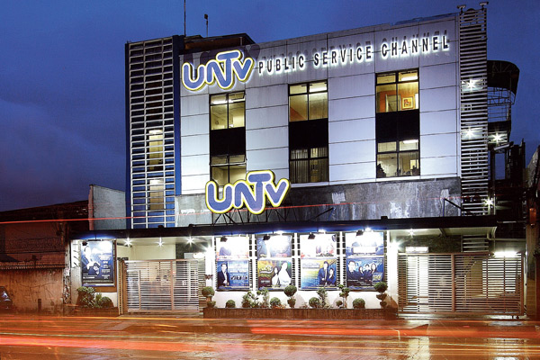

About Us

UNTV is a major TV broadcast network with 24-hour programming. An Ultra High Frequency station with strong brand content that appeal to everyone, UNTV is one of the most trusted and successful Philippine networks that guarantees wholesome and quality viewing experience.
Devoted to sensible broadcasting, highlighting alternative and intelligent programs, UNTV acknowledges the role played by media in the enrichment of life, culture, thinking and identity of Filipinos around the world.
Programs at UNTV are designed to reflect positive spirit and values, that adhereto safeguarding media freedom and responsibility to delivering free, responsible and responsive network.
Vision and Mission
UNTV strives to achieve its corporate vision and mission, namely:
-
As responsible and involved member of the community, to acknowledge the role played by media in the enrichment of life, culture, thinking and identity of every Filipino viewer.
-
To provide programs that reflect positive Filipino spirit and values without prejudice against any person in terms of sex, age, preference, culture, dialects, etc.
-
To safeguard and use the freedom of the press afforded by the laws of the land to bring a truly free, responsible and responsive network.
UNTV Mobile App
Watch and listen LIVE to UNTV and UNTV Radyo La Verdad 1350, the only 24/7 Philippine public service television channel and radio station on your tablet or mobile device. As in the television and web, UNTV app is the first to provide free simulcast video streaming.
-
View and hear the latest news and other happenings from the Philippines and around the globe through the UNTV News Reader.
-
Be updated on public service works offered and supported by UNTV, including announcements and notices of medical health missions.
-
Learn how-to's from information-packed UNTV programs tackling business ideas, law matters, health topics, spirituality queries, the latest on automotive as well as road safety and political issues.
-
Listen to the only live drama on radio, political commentaries and hourly news bulletin aired over UNTV Radyo La Verdad 1350.
-
Receive Twitter feeds from @UNTVnewsrescue.